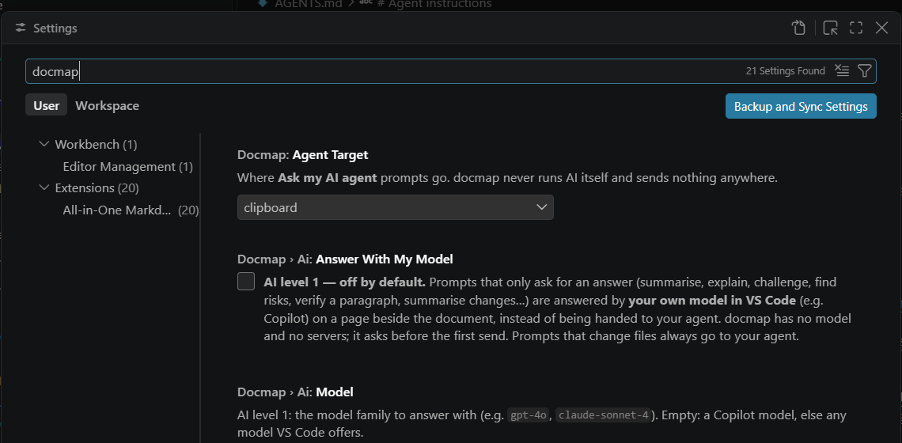

All settings #
Every docmap setting, what it does and its default. You rarely need to change any.
Helps: anyone who wants docmap to behave differently.
Where to find it
- Settings: Ctrl+, (Mac: Cmd+,) → type docmap.
- Or the gear icon at the bottom left → Settings.
Try it
- Press Ctrl+,.
- Type docmap.
- Change a setting; it takes effect at once.
What you should see

The full list
| Setting | What it does | Default |
|---|---|---|
docmap.cleanView | Clean view for AI-written Markdown | on |
docmap.readingTools | Quick read, heading levels, reading times, structure hints in the outline | on |
docmap.inferHeadings | Add bold-only lines and numbered lines like 2.1 Title to the outline (auto / always / off) | auto |
docmap.headingNumbers | Number the headings on the page | off |
docmap.theme | Reading theme: vscode, paper, github, night, focus | vscode |
docmap.fontScale | Text size on the page (1 = normal, 1.15 = larger) | 1 |
docmap.lineWidth | Line width: narrow, normal, wide, full | normal |
docmap.diagrams | Draw mermaid blocks as diagrams | on |
docmap.rememberPlace | Reopen a page at the section you were reading | on |
docmap.liveBrowser | Open Preview in Browser shows a live page (off: a saved copy) | on |
docmap.updateDebounceMs | How long after you stop typing the page updates (milliseconds) | 300 |
docmap.largeFileBytes | Files bigger than this ask before they open (5242880 = 5 MB) | 5 MB |
docmap.writingHelpers | Writing keys and lists that continue on Enter | on |
docmap.codeLens | 📄 Mentioned in N docs in code files | on |
docmap.staleDays | Docs Inbox: unchanged this many days = “Probably out of date” (0 = never) | 90 |
docmap.myNames | Your names and @handles for My Items and Sign off | empty (your git user name) |
docmap.agentTarget | Where prompts go: clipboard or auto (Copilot Chat) | clipboard |
docmap.ai.answerWithMyModel | Your own model answers on a page | off |
docmap.ai.model | Which model family answers (empty: a Copilot model, else any) | empty |
docmap.ai.tools | Tools for your AI agents | off |